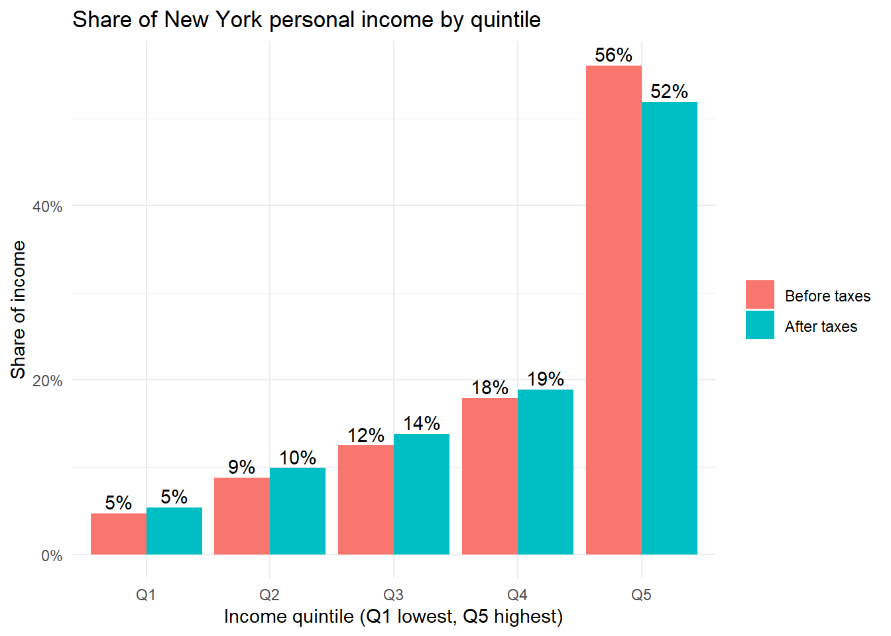
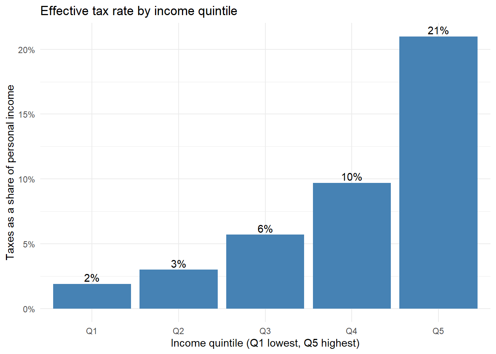
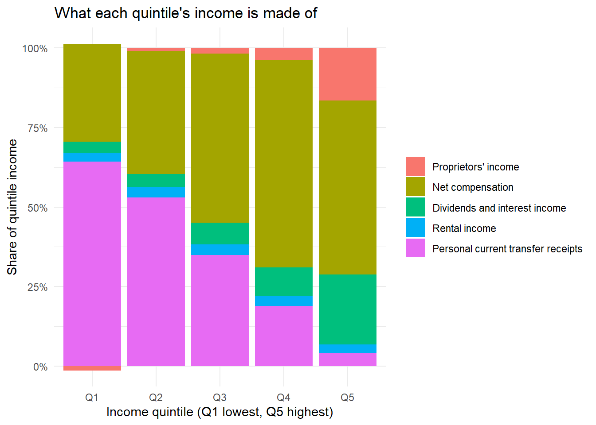

The New York income dataset reports the major components of personal income for households ranked into five equal groups (quintiles), first by personal income and then by disposable personal income (income after taxes). The file is a formatted report rather than a table. It has a title row, two layers of headers, footnotes at the bottom, footnote numbers stuck to the end of some labels (Net compensation 3), and every share is stored as text with a percent sign. In addition, the first row of data does not hold values at all and instead lists the income range for each quintile. All of this needs to be trimmed away before the data can be reshaped.
When performing an analysis we should break it up by quintile and look at each component of income within them. In this instance, we will look at how much of total income goes to each quintile before and after taxes, how large a share of income taxes take from each quintile, and what each quintile’s income is made of.
library(tidyverse)income_raw <-read_csv("https://raw.githubusercontent.com/Keenan-Roe/DATA-607/main/Project%202/New-York-Income%20Distribution.csv",col_names =FALSE,col_types =cols(.default =col_character()),skip_empty_rows =FALSE)#from the first row of data (GeoFIPS 36000) to the last row of datastart <-which(income_raw$X1 =="36000")[1]end <-tail(which(income_raw$X1 =="36000"), 1)#trim out the title rows and footnotes and rename columnsbody <- income_raw[start:end, 3:15]names(body) <-c("line", "description", "total", paste0("Personal_Q", 1:5), paste0("Disposable_Q", 1:5))#the first row holds the income range for each quintile instead of data, so we pull it outranges <- body |>slice(1) |>select(-line, -description, -total) |>pivot_longer(everything(), names_to =c("ranking", "quintile"),names_sep ="_", values_to ="range")print(ranges, n =Inf)
# A tibble: 10 × 3
ranking quintile range
<chr> <chr> <chr>
1 Personal Q1 <$34,281
2 Personal Q2 $34,281-$46,384
3 Personal Q3 $46,384-$63,412
4 Personal Q4 $63,412-$96,798
5 Personal Q5 ≥$96,798
6 Disposable Q1 <$33,310
7 Disposable Q2 $33,310-$44,301
8 Disposable Q3 $44,301-$58,622
9 Disposable Q4 $58,622-$85,159
10 Disposable Q5 ≥$85,159
Wide to long
Now that the data is trimmed we can create a function that transforms it into a clean longer style dataset, using pivot longer to split each column name into its ranking (personal or disposable) and its quintile. We will also need to convert the text numbers into real numbers to perform some basic analysis. This includes removing the footnote numbers from the labels, turning the percentages into proportions, and multiplying each share by the component’s total to get the dollar amount going to each quintile.
clean_income <-function(data) { data |>slice(-1) |># drop the quintile range rowmutate(description =str_remove(str_trim(description), "\\s+\\d$"),total =parse_number(total)) |>pivot_longer(-c(line, description, total),names_to =c("ranking", "quintile"),names_sep ="_",values_to ="share") |>mutate(share =parse_number(share) /100,description =factor(description, levels =unique(description)),quintile =factor(quintile, levels =unique(quintile)),dollars = total * share)}
Clean Data Aggregation
Using our function, we will create the clean dataset and output some basic summary statistics. This does not help us glean much information so we will move on to analysis and plot creation to get an idea of the trends we can identify in the data. Note that the totals are in millions of dollars, so the dollars column is as well.
Min. 1st Qu. Median Mean 3rd Qu. Max.
-0.0060 0.0495 0.1190 0.2000 0.2008 0.9120
Analysis
Now that we have the data in a clean data format, we can start looking at it proportionally. With the personal income ranking we can compare line 8 (personal income, before taxes) to line 10 (disposable income, after taxes) to see how taxes change each quintile’s share of income. We can divide the taxes paid on line 9 by the income on line 8 to get an effective tax rate for each quintile. Finally, lines 3 through 7 add up to personal income, so we can use them to break each quintile’s income into its sources. We can then present the results in different charts showcasing the proportionality.
#share of all personal income held by each quintile before taxes (line 8) and after taxes (line 10)income_share <- income_long |>filter(ranking =="Personal", line %in%c("8", "10")) |>mutate(stage =factor(if_else(line =="8", "Before taxes", "After taxes"),levels =c("Before taxes", "After taxes")))income_share |>select(stage, quintile, share) |>mutate(share =round(share, 3)) |>pivot_wider(names_from = quintile, values_from = share) |>print(n =Inf)
#taxes paid as a percent of personal income within each quintile (line 9 / line 8)tax_rate <- income_long |>filter(ranking =="Personal", line %in%c("8", "9")) |>select(quintile, line, dollars) |>pivot_wider(names_from = line, values_from = dollars) |>rename(personal_income =`8`, taxes =`9`) |>mutate(tax_rate =round(taxes / personal_income, 3))print(tax_rate, n =Inf)
#what each quintile's income is made of (lines 3 to 7 add up to personal income)component_share <- income_long |>filter(ranking =="Personal", line %in%c("3", "4", "5", "6", "7")) |>group_by(quintile) |>mutate(share = dollars /sum(dollars)) |>ungroup()component_share |>select(quintile, description, share) |>mutate(share =round(share, 3)) |>pivot_wider(names_from = description, values_from = share) |>print(n =Inf)
ggplot(income_share, aes(quintile, share, fill = stage)) +geom_col(position ="dodge") +geom_text(aes(label = scales::percent(share, accuracy =1)),position =position_dodge(width =0.9), vjust =-0.3) +scale_y_continuous(labels = scales::percent) +labs(title ="Share of New York personal income by quintile",x ="Income quintile (Q1 lowest, Q5 highest)", y ="Share of income", fill =NULL) +theme_minimal()

ggplot(tax_rate, aes(quintile, tax_rate)) +geom_col(fill ="steelblue") +geom_text(aes(label = scales::percent(tax_rate, accuracy =1)), vjust =-0.3) +scale_y_continuous(labels = scales::percent) +labs(title ="Effective tax rate by income quintile",x ="Income quintile (Q1 lowest, Q5 highest)", y ="Taxes as a share of personal income") +theme_minimal()

ggplot(component_share, aes(quintile, share, fill = description)) +geom_col() +scale_y_continuous(labels = scales::percent) +labs(title ="What each quintile's income is made of",x ="Income quintile (Q1 lowest, Q5 highest)", y ="Share of quintile income", fill =NULL) +theme_minimal()

The distribution of income in New York is very top heavy. The highest quintile (households at or above $96,798 per equivalized household) holds 56% of all personal income before taxes while the lowest quintile (below $34,281) holds under 5%. Taxes pull this together a little, with the top quintile falling to about 52% of income after taxes and the bottom rising to about 5%. The reason is that the top quintile pays 81% of all personal income taxes, which works out to an effective rate of roughly 21% of their income compared with about 2% for the lowest quintile, and the rate climbs at every step in between.
The source of income also changes a lot as we move up. Transfer receipts make up around 64% of the lowest quintile’s income but only 4% of the highest, while the top quintile earns a much larger piece of its income from dividends and interest (22%) and from proprietors’ income (17%). Proprietors’ income is actually slightly negative for the lowest quintile, which shows up as a small bar below zero in the chart. Compensation from work is the largest source of income for the middle and upper quintiles, peaking at about 65% in the fourth.
Conclusion
The trends in the data line up with what we would expect, with income concentrated at the top, progressive taxes, and lower income households relying much more on transfers than on work or investments. The data cannot tell us why, though. Quintile shares describe groups rather than households, so we cannot see how far apart households within a quintile are, and the top quintile in particular covers a very wide range of incomes. The data also only covers New York in 2012, so the next step would be to compare other states or years to see whether New York’s distribution is unusual, and to look at how it has changed over time.